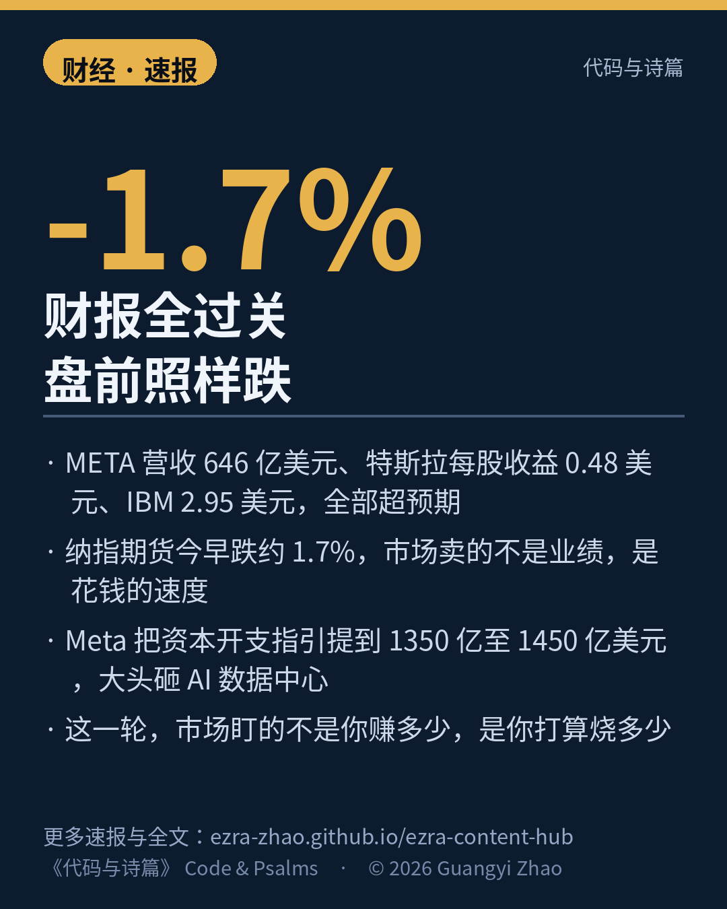

财报全过关，盘前照样跌。
昨晚 META 营收 646 亿美元、特斯拉每股收益 0.48 美元、IBM 2.95 美元，全都超过预期。今早纳指期货却跌了约 1.7%。
市场卖的不是业绩，是花钱的速度：Meta 把 2026 年资本开支指引提到 1350 亿至 1450 亿美元，钱大头砸 AI 数据中心。特斯拉营收创纪录，净利润却同比掉了大约 44%。
这一轮，市场盯的不是你赚多少，是你打算烧多少。
来源：Investopedia 开盘前要点 · Barron's 异动股
数字证据说明：期货跌幅 A 级（Investopedia 开盘前快照）；财报实际值 B 级（多家同日汇总交叉，公司原文待回核）。
以上为《代码与诗篇》速报。播报版将于分发通道就绪后发布。© 2026 Guangyi Zhao